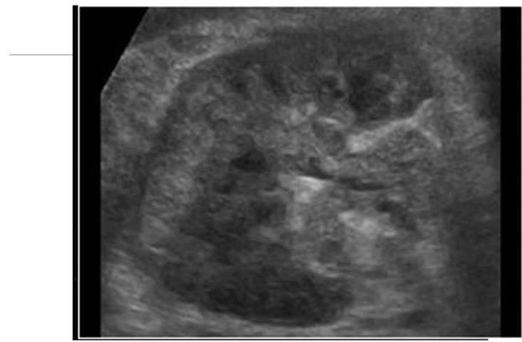
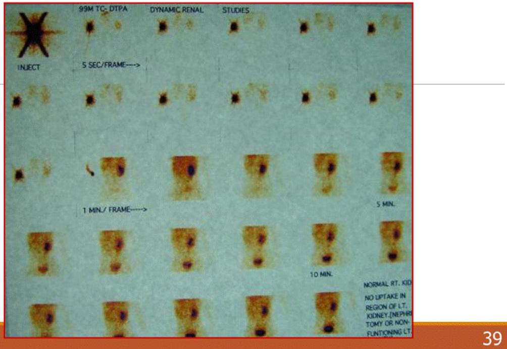
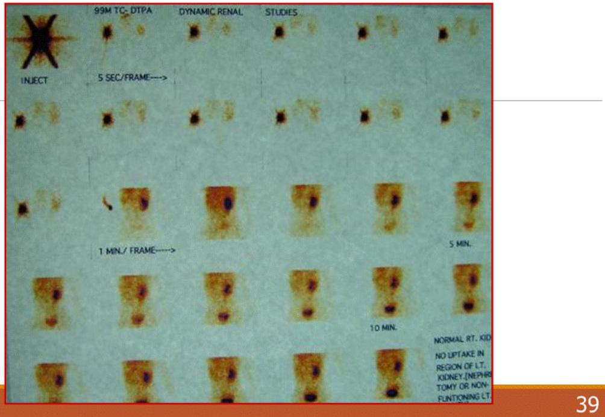

GUT Imaging 1
Genitourinary Imaging
DR G. N. MWANGO
Scope
-
Methods of imaging
- Urinary system
- Male/ female genital system
- Indications
- Advantages
- Disadvantages
- Imaging pathology
- Plain tilms - KUB
- Ultrasound
- Intravenous urogram (pyelogram) - (IVU, IVP; excretion urography)
- Micturating cystogram or cystourethrogram (MCUG)
- Cystogram
- Urethrogram (ascending urethrogram)
- Retrograde pyelogram
- Antegrade pyelogram
- Radionuclide studies:
- Computed tomography (CT)
- Magnetic Resonance Imaging (MRI)
- Angiography
1. ULTRASOUND
- investigation of choice in children
- In adults, depending on indication Ultrasound or IVU/CT pyelogram maybe considered.
Indications of ultrasound
- Assess the kidneys in suspected renal pathology; location, size, echotexture, masses, cysts, hydronephrosis, calcifications
- Vascularity of the kidney, renal masses or suspected vascular lesions
- Resistive index of renal arteries in suspected renal artery stenosis
- Ultrasound guided procedures e.g. Percutaneous kidney biopsies, drainage catheter placement
- Assess renal transplants; size, structure, vascularity, fluid collections
- Obstructive uropathy; level of obstruction and sometimes the cause of the obstruction
- Bladder outline, bladder volume, residual volume
- Assess the surrounding structures in the retroperitoneum/extraperitoneum for fluid
- it is cheap and readily available
- it is safe - no danger of contrast reactions, can still assess kidneys in renal failure
- no radiation
- Can be used in point-of-care or emergency settings
Ultrasound; Disadvantages
- the ureters cannot be seen unless dilated.
- calyceal detail cannot be seen which is necessary for assessment of chronic pyelonephritis, papillary necrosis and tuberculosis
- Uro-endothelial (transitional cell) tumours of the renal pelvis/calyces are not visualised until large.

nephrolithiasis
Renal cell cancer
TRANSPLANTED KIDNEY
2. PLAIN FILMS - KUB
-
Calcifications- 85-90% of renal stones calcify.
- Stag horn calculus ; large calculus occupying much of the pelvi-calyceal system.
- Nephrocalcinosis - multiple calcifications in the parenchyma.
- Displacement of bowel loops in abdominal mass
- Spinal metastases in prostatic cancer, spinal anomalies in a child with urinary problems

Urinary stones
-
Renal parenchymal stones-
- medullary sponge kidney
- hyperparathyroidism
- renal tubular acidosis
KUB

2. GAS IN THE URINARY TRACT
Gas in the bladder lumen may be seen in
- vesico-intestinal fistula
- Cystitis due anaerobic infection in diabetics
Invertograms Vs prone cross-table laterals
3. INTRAVENOUS PYELOGRAM (IVP)
- Intravenous Urogram is indicated in suspected urinary tract pathology when ultrasound has failed to make a diagnosis.
- Is NOT sensitive in hypertension
- Iodinated water-soluble contrast medium is given intravenously and series of films taken
Indications for IVU
- Haematuria
- dilated ureter on ultrasound
- inconclusive ultrasound scan
Less common indications:
- to show the position of ureters for planning surgery or X-ray therapy
- in suspected calyceal deformity in tuberculosis, papillary necrosis and chronic pyelonephritis
- Trauma - if ultrasound is inconclusive and CT not available
Contra-indications: IVU
Intravenous pyelography is not indicated in:
- Advanced renal failure - use ultrasound
- Prostatism
- Polycystic renal disease - better seen on ultrasound
- Vague abdominal pain
- Acute urinary tract infection
- Renal artery stenosis
- Previous reaction to iodinated contrast
Relative contraindications: IVU
Intravenous pyelography should be performed with caution in:
- diabetic patients
- very small children
- myelomatosis
- patients with sickle cell disease


4. MICTURATING CYSTOGRAPHY
MCU - study of bladder emptying after water soluble contrast has been inserted into the bladder, usually by catheter.
Its main use is to show:
- Ureteric reflux
- Abnormality of the posterior urethra - urethral valves or stricture.
- Vesico-vaginal fistula (usually just a cystogram is adequate)


5. ASCENDINGURETHROGRAPHY
This is only performed in males. Indications are:
- urethral stricture
- trauma
- congenital abnormalities
- fistulae or false passages due to previous catheterisation/ instrumentation.
It is contraindicated in:
- acute urinary infection

 


6. RETROGRADE PYELOGRAM
Its use has reduced with the advent of computed tomography and ultrasound
Main indication:-
- Demonstrate detail of the pelvi-calyceal system or ureter that has not been adequately seen in IVU especially in suspected Transitional cell tumor
- It is contra-indicated in acute urinary infection.
Ureteric intra-luminal lesion obstructing the ureter and causing proximal dilatation.
Complications include:
- damage to the ureter or perforation
- infection
7. ANTEGRADE PYELOGRAM
- Used to demonstrate the pelvicalceal system and ureter in obstructive uropathy
- May be combined with percutaneous nephrostomy in order to relieve obstruction as a temporary measure.
- Contraindication- acute infection.
- Contrast is injected through a fine needle introduced percutaneously into the pelvi-calyceal system under ultrasound or fluoroscopic guidance.
8. RADIONUCLIDESTUDIES
-
Static scan:
- Radiopharmaceutical attaches to normal functioning renal tissue.
- Demonstrates the size, outline and amount of normal renal parenchyma (Dimercaptosuccinate-99mTc).
- Indication- renal parenchymal disease
-
Dynamic scan:
- Measures the excretion the radiopharmaceutical by the kidneys primarily by GFR and its clearance down the ureters
- Functional study (99mTc-DTPA).
- Indications- hypertension, renal tubular acidosis, renal transplant
9. COMPUTED TOMOGRAPHY.
Used in the assessment of
- renal masses
- Urinary tract obstruction
- retroperitoneal disease
- renal and bladder neoplasms; staging
- Trauma; CT is the imaging method of choice in renal trauma.


CT urography

9. ANGIOGRAPHY
Ultrasound, and especially Doppler studies, CT have reduced the need for diagnostic renal angiography.
Main indications:
- prior to interventional techniques e.g. angioplasty
- to diagnose renal artery stenosis
- vascular lesions e.g. arterio-venous fistula, angioma, aneurysm
- anatomical detail prior to renal transplant or suspected vascular occlusion following surgery
Angiography
Flush Aortography vs. Selective renal

10. MRI SCANNING
-
Main indication-
- staging renal, bladder and prostatic tumours.
- MR angiography can show renal vein involvement in renal cell carcinoma.
- MR urography to demonstrate the urinary system


MRA- to assess vascular anatomy